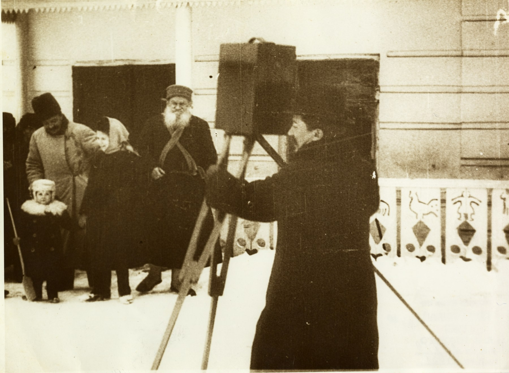

01 / ЦИФРОВЫЕ КОЛЛЕКЦИИ
Фотоархив
Толстого
Более 9000 фотографий из фондов музея уже представлены на портале «Слово Толстого». Вместе с Яндексом мы совершенствуем их обработку и поиск.
Об изображении
А.О. Дранков снимает Л.Н. Толстого и его родных. 1910 г.